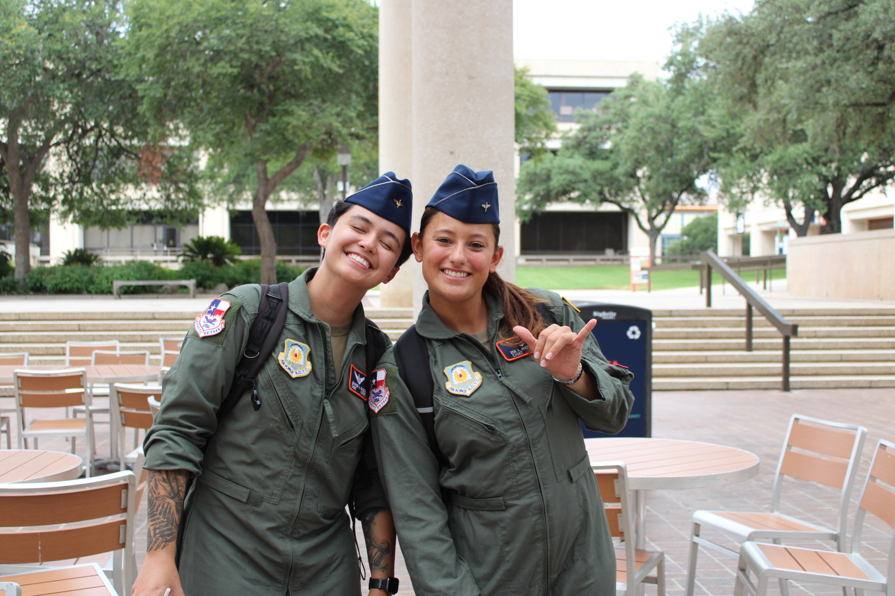
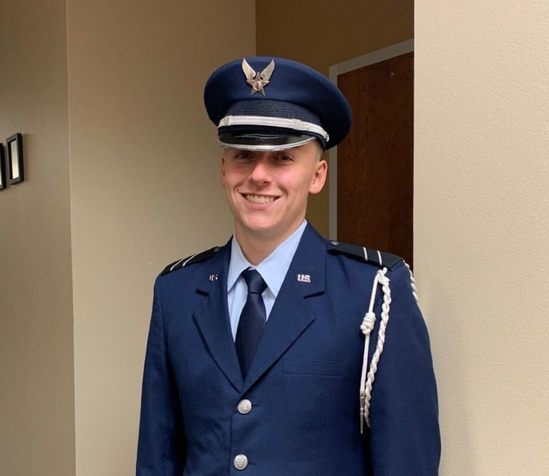
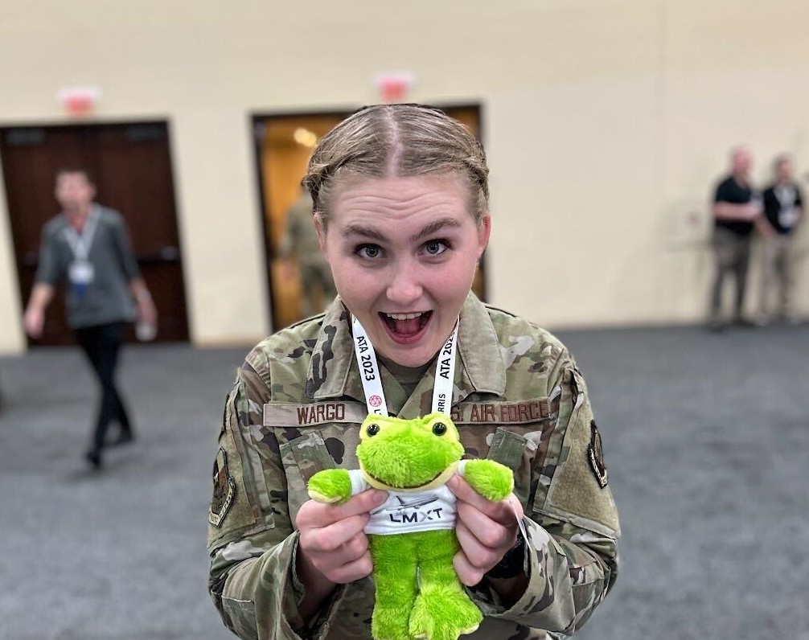
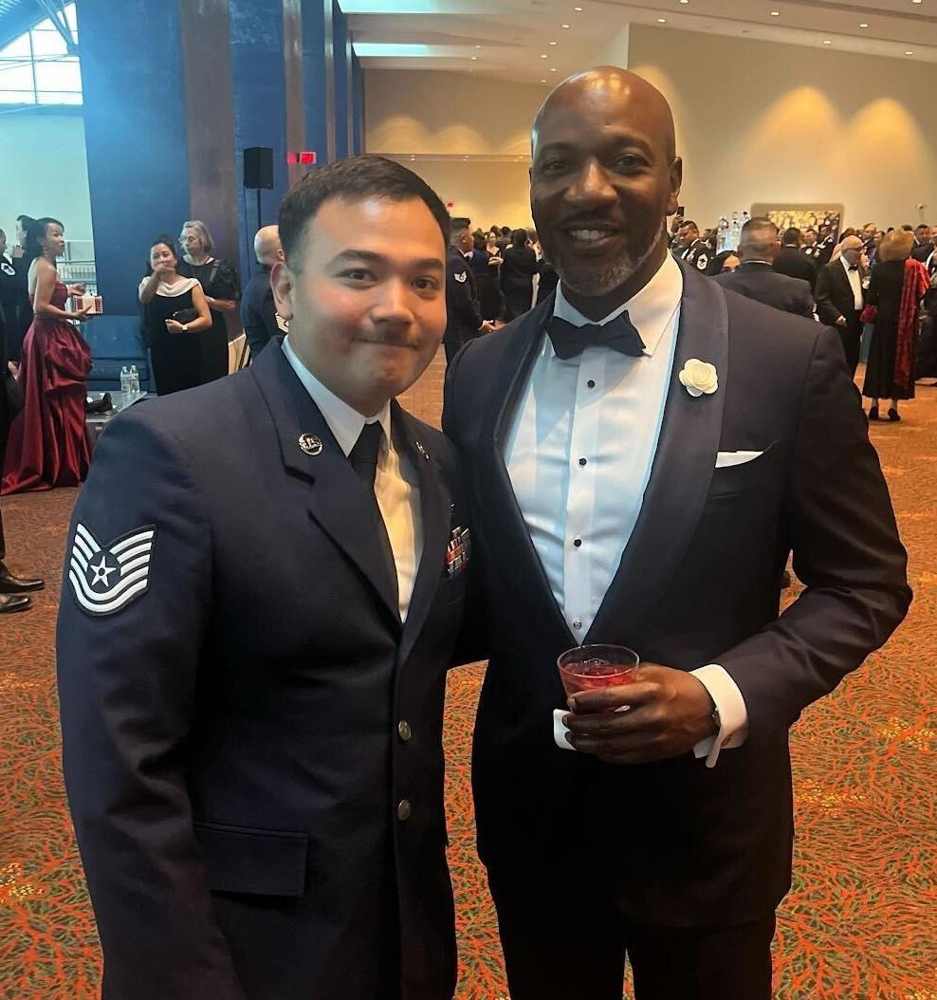
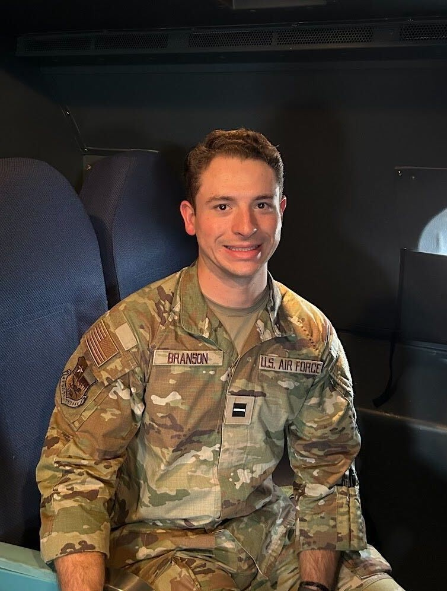
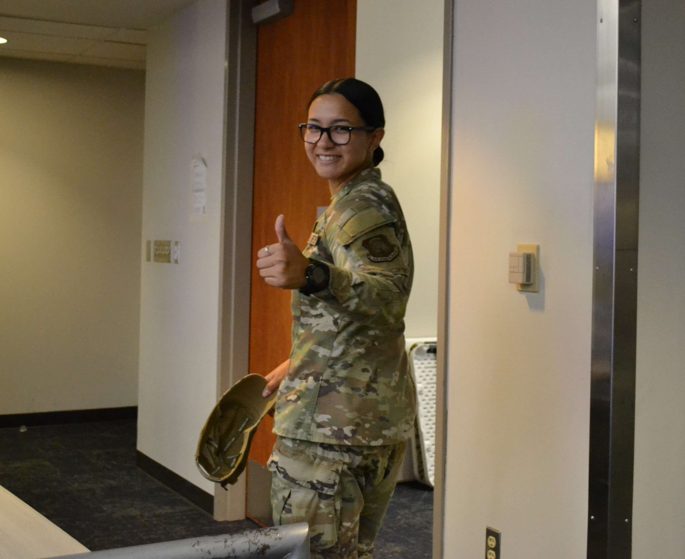

UT SAN ANTONIO DETACHMENT 842

Operates and commands aircraft in a variety of missions including air combat, airlift,
refueling, reconnaissance, and training.
“We like planes.”

Manages aircraft mission systems such as navigation, sensors, and weapons; acts as the tactical mission planner and in-flight operator supporting pilots.

Directs air combat and mission operations from command and control platforms like the E-3 AWACS, coordinating aircraft and assets in real time.

Commands and controls the Air Force’s intercontinental ballistic missiles (ICBMs) and ensures readiness and security of nuclear deterrent forces.

Applies mathematical modeling, data analytics, and statistical methods to optimize Air Force operations, logistics, and resource allocation.
Plans and conducts offensive and defensive cyber missions to protect Air Force networks and enable global operations in cyberspace.

Collects, analyzes, and interprets intelligence to support operational planning, targeting, and national security decision-making.

Integrates electronic warfare, cyber, and psychological operations to influence, disrupt, or protect information and decision systems.
Manages personnel, manpower, and services programs—ensuring Airmen are trained, supported, and mission-ready.

Oversees the development, procurement, and life-cycle management of Air Force systems, weapons, and technologies to meet operational needs.
We do not have our SFSCs yet.
"We like Space."